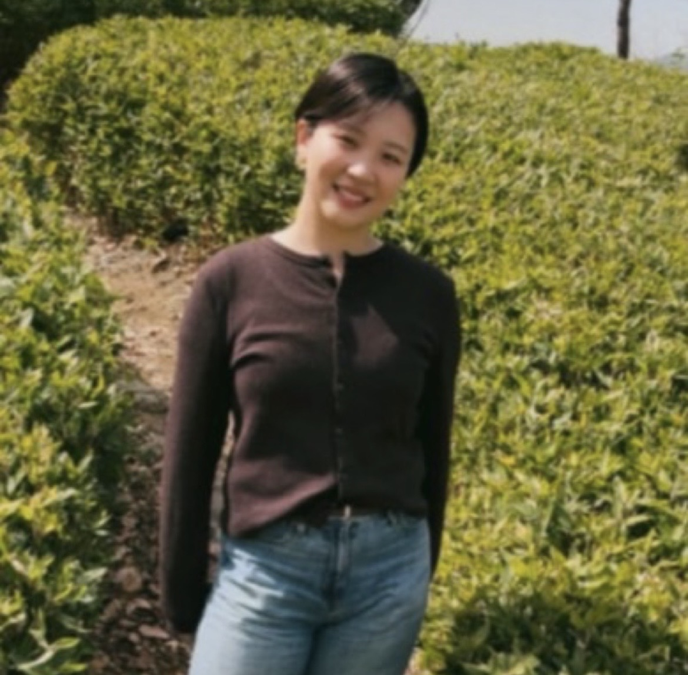

I am a researcher working at the intersection of narrative theory, critical philosophy of technology, trauma studies, and queer-feminist thought. My work examines how literary, cinematic, and technological forms expose the limits of dominant regimes of agency, audibility, and autonomy, while theorizing alternative modes of relation, opacity, and listening.
I am currently preparing for my doctoral studies beginning this fall at Academia Sinica. My current research develops the concepts of narrative assemblage and strategic opacity across contemporary fiction, film, and AI ethics. I welcome inquiries about my research, potential collaborations, or speaking opportunities. Please feel free to reach out via email at r11122017@ntu.edu.tw (in English / Japanese / Chinese).
This article theorizes “compulsory autonomy” as a discursive regime that sustains the illusion of autonomous AI by obscuring the human labor, infrastructures, and maintenance practices—such as content moderation, RLHF, and data work—that make AI systems appear self-sufficient.
This paper argues that debates about AI agency misidentify where agency is grounded, treating models as the source of agency while overlooking the heteronomous assemblages of labor, infrastructure, institutions, and maintenance that make agency-attributions possible.
This article reframes Sciamma’s film not as a simple reversal of the male gaze, but as a study of how looking is materially arranged through bodies, canvases, light, sound, and cinematic form.
This thesis argues that Cusk’s Outline models an after-trauma narrative form that resists "compulsory articulation"—the cultural logic equating personhood with coherent, self-originating narration. It theorizes a "dividual" narrator whose agency emerges through "narrative assemblage": a patterned arrangement of borrowed voices, material actants (boats, glass, atmospheres), and strategic opacity.
Email / PhilPeople / Medium